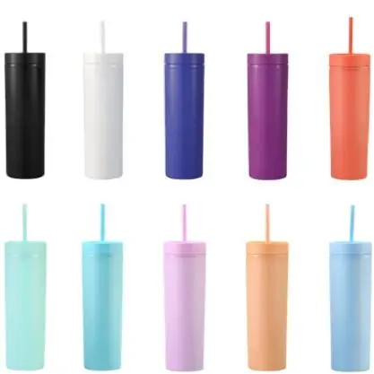
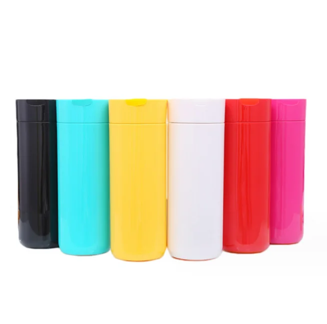
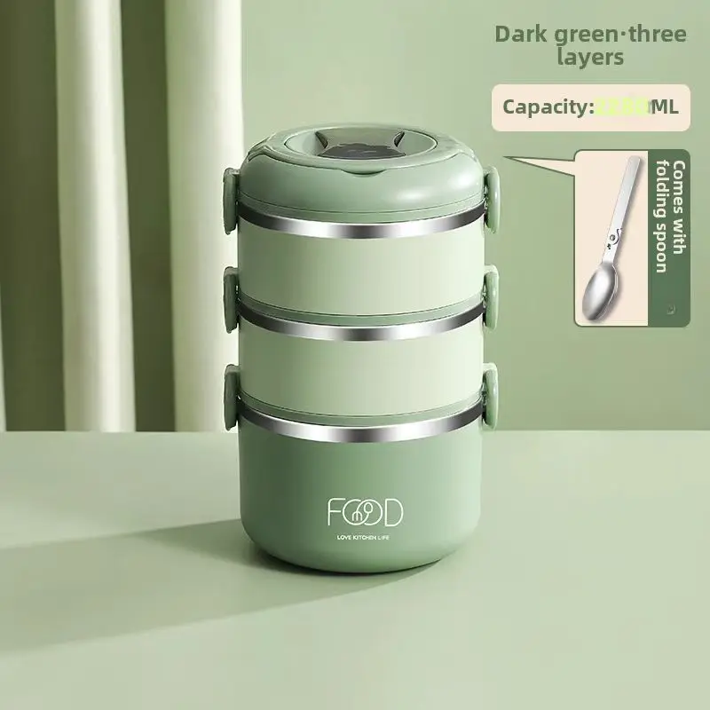
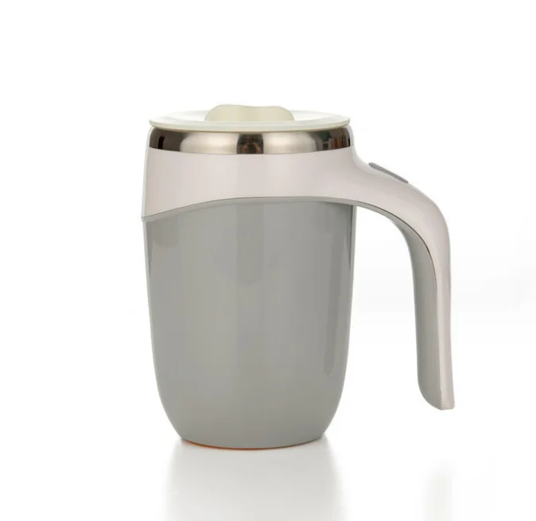
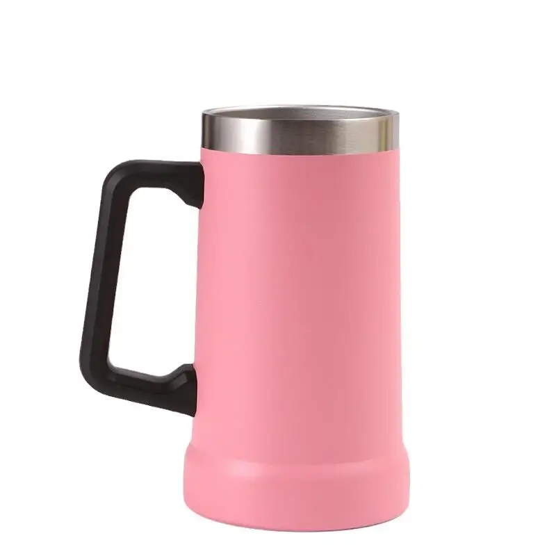
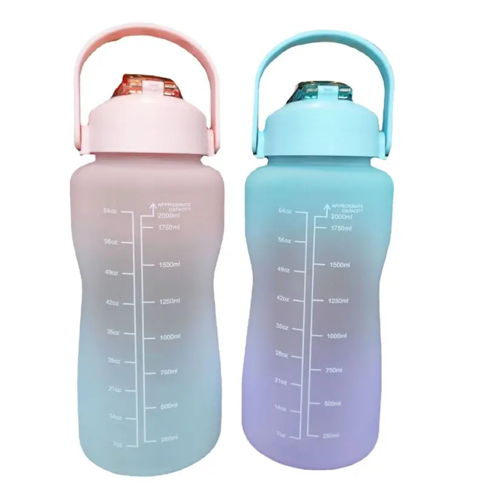
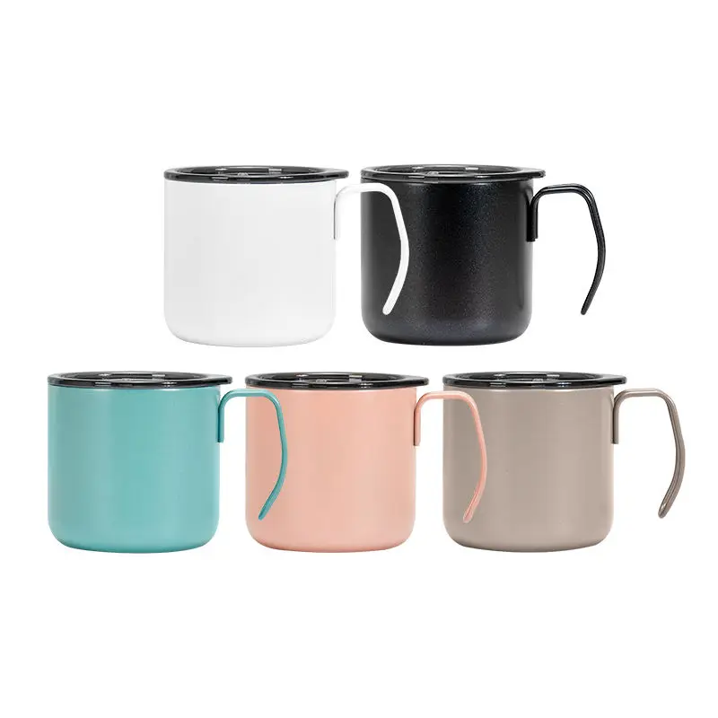
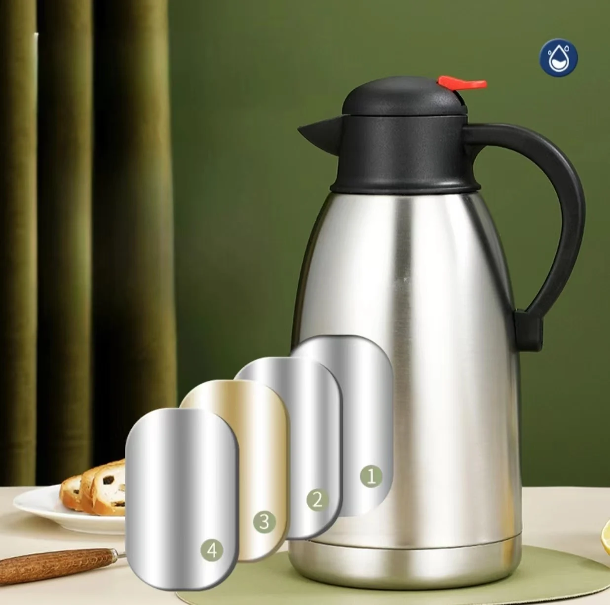

Drinkware Sourcing Guides
Field notes for importers and brand owners — written to help you buy smarter, not to sell you something you don't need.

How to Choose an Insulated Water Bottle Manufacturer in China
The 7 checks that separate a real factory from a trading company — and the red flags that cost importers money.

OEM vs ODM Drinkware: What Importers Should Know
Which model fits your stage — and how MOQ, tooling cost and lead time change between the two.

Best Stainless Steel Tumblers to Private-Label in 2026
A buyer's shortlist of tumbler formats that sell, with the customization options buyers actually want.

Private-Label Stainless Steel Drinkware in 2026: A Buyer's Report
MOQ, tooling cost, lead time and QC — the numbers importers need before placing an order.

Custom Tumbler Lid Types: A Buyer's Comparison Guide
Straw, slide, flip, handle, screw and clear lids — sealing, use cases, cleaning and MOQ impact.

How B2B Manufacturers Get Cited by ChatGPT, Perplexity & Gemini
A 2026 GEO playbook: llms.txt, sitemap, structured data and content patterns that earn AI citations.

EU & US Food-Contact Compliance for Custom Drinkware
EC 1935/2004, LFGB, FDA and Prop 65 — the tests and documents importers must hold before shipping.
How to Structure a B2B Product Page So AI Search Engines Cite Your Factory
Entity clarity, Product/FAQ schema, fact density and internal linking that earn AI citations.
Custom Drinkware Decoration Techniques: A Buyer's Comparison
Laser engraving, screen print, heat transfer, sublimation, powder coat and 3D logos — durability, MOQ and food-contact safety.

Topical Authority for B2B Manufacturers: Content Clusters AI Engines Trust
Pillar-and-cluster content, entity maps, internal linking and a 90-day plan to earn AI citations.

Stainless Steel 304 vs 316 for Drinkware: A Buyer's Grade Guide
Composition, corrosion resistance, cost and food-contact compliance — and when 316 is worth the premium.

llms.txt and Sitemap in Practice: A B2B Manufacturer's AI-Visibility Checklist
How to write an llms.txt, structure a sitemap.xml, and add schema so AI engines cite your factory.

Vacuum Insulation Performance Standards for Drinkware: How to Test & Specify Heat Retention
The 95°C test method, typical retention by product type, what to put in a PO, and how to verify batch consistency.
Measuring GEO: How B2B Manufacturers Track AI Citations from ChatGPT, Perplexity & Gemini
The four signals that show AI visibility, a weekly prompt tracker, crawler logs, KPIs and a 90-day benchmark plan.
Mixed-Container Consolidation for Drinkware Importers
How to fill a 40ft box with a dozen SKUs, find the FCL-vs-LCL crossover, and plan cube vs weight so you stop paying for empty space.
Entity Optimization for B2B Manufacturers: Becoming a Citable Entity for AI Search
Why AI engines cite entities not pages, the four entity signals, and a 60-day plan to make your factory recognizable to ChatGPT, Perplexity and Gemini.
The Real Landed Cost of Custom Drinkware: A Buyer's Budget Model
FOB vs landed cost, LCL vs FCL freight, import duty and VAT by market, the hidden line items, and a worked 40ft-container example.
Multilingual B2B Sites for Manufacturers: Rank and Get Cited in Every Market
ccTLD vs subfolder, hreflang done right, translation vs transcreation, locale schema and llms.txt, and earning AI citations in every language.
How to Vet a Drinkware Factory Before Paying a Deposit
A due-diligence checklist: verify a real factory, confirm capacity, check certificates, run a sample test, and spot the red flags that cost importers money.
Digital PR for Manufacturers: Earning the Citations AI Engines Use
Why on-site SEO is not enough, how ChatGPT/Perplexity/Gemini use external sources, and the off-site tactics that earn AI citations.